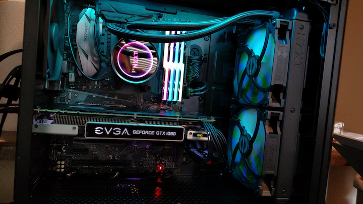

New Radiator Fans
The stock fans that came with the water cooler were pretty load so I snagged four quieter fans and set up a push/pull configuration on the radiator. In a push/pull setup, one set of fans pushes air through the radiator from one side while the other set pulls it through and into the case. The hot air is then pushed out the back of the case by the rear fan. The push fans are hidden behind the radiator block in this image.